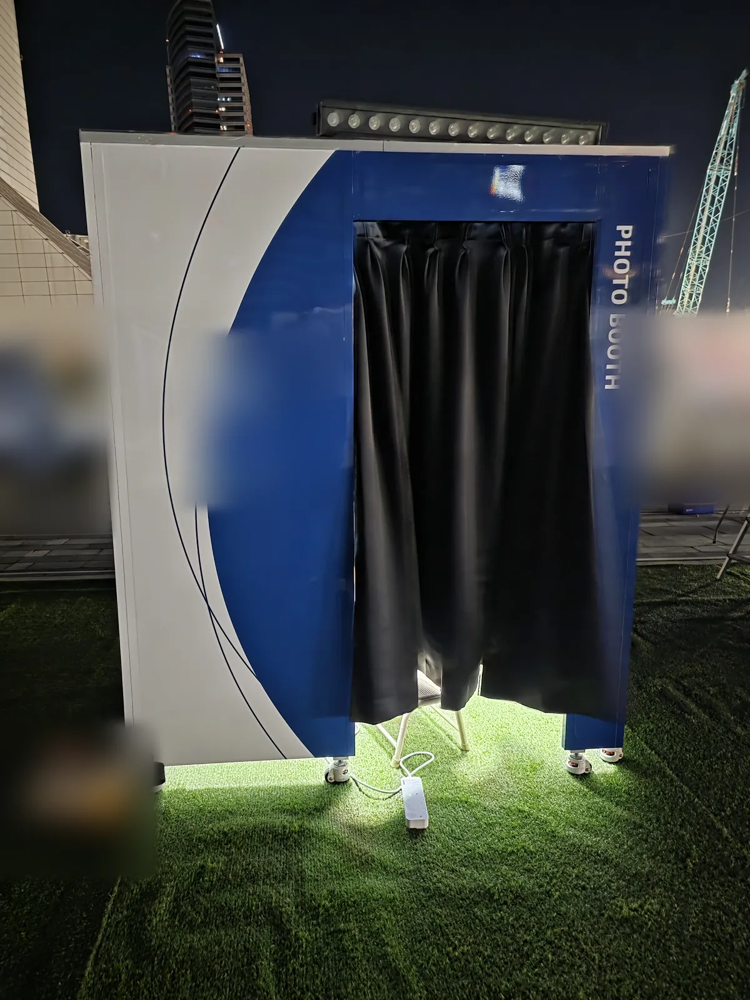

겉면 디자인·촬영 화면·부스 모양까지 맞춤 제작
목록에 없는 모양이 필요할 때 범위를 정해 맞춰 만들어 드립니다. 겉면을 감싸는 랩핑, 촬영 화면과 사진 테두리를 바꾸는 화면 디자인 변경, 공간을 통째로 재현하는 테마 부스 중 필요한 만큼 고르시면 됩니다.
커스텀 범위에 따라 사양이 달라집니다. 치수 확인과 시안 확인을 거쳐 확정한 내용으로 진행합니다.
표시한 금액은 모두 부가세 별도입니다
협의 제품은 아래 여섯 가지에 따라 구성과 금액이 달라집니다. 정해진 범위 금액은 아직 공개하지 않고, 상담 때 구성과 함께 견적으로 드립니다.
며칠 행사인지, 매장에 계속 두는 상설 설치인지에 따라 달라집니다.
같은 부스를 여러 대 함께 쓰면 대수만큼 장비와 운영 구성이 늘어납니다.
겉면에 행사 그래픽을 새로 입힐지, 기본 외장 그대로 쓸지에 따라 달라집니다.
촬영 화면·사진 테두리(프레임)·외장 모양을 얼마나 바꿀지에 따라 달라집니다.
설치 장소까지의 거리와 차량 조건에 따라 운송비가 정해집니다.
층수·엘리베이터·야외 여부와 설치·철수 가능 시간에 따라 달라집니다.
네. 원하는 모습과 설치 장소를 알려 주시면 가능한 범위를 먼저 정리해 드립니다. 범위에 따라 기간과 가격을 협의합니다.
디자인 시안이 확정된 뒤 출력·재단·부착까지 보통 1~2주가 걸립니다. 일정이 촉박하면 먼저 상담해 주세요.
네. 첫 화면부터 결제·촬영·출력 화면까지 행사 색과 로고로 바꿀 수 있습니다. 인천대학교 학위수여식에서는 화면 10개와 전용 사진 테두리 20종을 학교 디자인으로 만들었습니다.
랩핑은 부스 겉면에 붙인 출력물이라 행사가 끝나면 떼어 냅니다. 같은 부스에 다음 행사 디자인을 다시 붙일 수 있습니다.
장소·날짜·대수를 알려 주시면 24시간 안에 구성과 견적을 보내 드립니다. 상담·견적은 무료입니다.